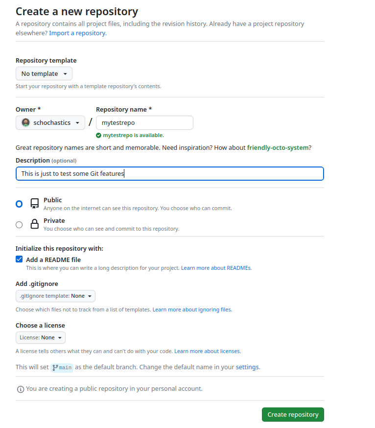
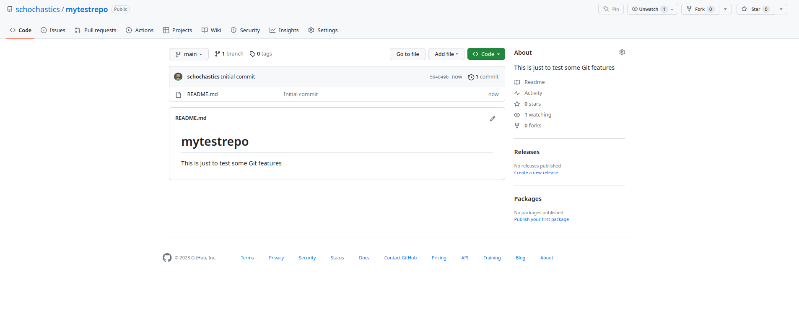

Let’s Git going
What is Git?
Git is a version control system that helps you manage and track changes to files, typically used in software development but applicable to other projects as well.
At its core, Git allows you to keep a record of your project’s history and collaborate with others effectively. Here’s a breakdown of the key concepts:
Repositories: Git operates within repositories, which can be thought of as containers for your project. A repository stores all the files, directories, and their entire history.
Commits: A commit represents a snapshot of your project at a specific point in time. It’s like a saved version of your code. Each commit has a unique identifier and contains the changes made since the last commit.
Branches: Git allows you to create branches, which are separate lines of development within a repository. Branches enable you to work on different features or bug fixes independently without affecting the main codebase. They also make it easier to merge changes later.
Working Directory: This refers to the current state of your project files on your local machine. You make changes to files in your working directory.
Staging Area: The staging area, also known as the index, is where you prepare your changes before committing them. You add modified files or specific changes to the staging area to include them in the next commit.
Push and Pull: When you want to share your changes or collaborate with others, you can push your local commits to a remote repository. On the other hand, pulling refers to fetching the latest changes from the remote repository to your local copy.
Merge: Merging is the process of combining different branches or commits into one. It allows you to incorporate changes from one branch into another.
Conflict: Conflicts occur when Git can’t automatically merge changes because they conflict with each other. Resolving conflicts involves manually modifying the conflicting code to create a unified and correct version.
Git provides a command-line interface (CLI) and various graphical user interfaces (GUIs) to interact with its functionality. Using Git, you can track changes, revert to previous versions, collaborate with others, and maintain a comprehensive history of your project.
What is GitHub?
GitHub is a web-based platform that utilizes the Git version control system. It provides a centralized location for developers to store, manage, collaborate on, and share their code repositories. In addition to the points mentioned above, GitHub also offers:
Remote Hosting: GitHub acts as a remote hosting service for Git repositories. It provides a secure and accessible location where developers can store their code and collaborate with others.
Collaboration: GitHub facilitates collaboration among developers by offering features like pull requests and code reviews. Multiple contributors can work together on the same project, propose changes, and discuss modifications before merging them into the main codebase.
Issue Tracking: GitHub provides a built-in issue tracking system where users can report bugs, suggest enhancements, or create task lists. It allows for better project management and communication among team members.
Install Git
- Install Git from here: https://gitforwindows.org/
- When asked about “Adjusting your PATH environment”, make sure to select “Git from the command line and also from 3rd-party software”. Everything else can be left as default
- Install Git from here: http://git-scm.com/downloads
Install Git via your distro’s package manager.
Ubuntu or Debian Linux:
sudo apt-get install gitFedora or RedHat Linux:
sudo yum install gitA comprehensive list for various Linux and Unix package managers: https://git-scm.com/download/linux
Register on GitHub
Register an account at https://github.com and choose a username that you are comfortable sharing with your boss. There are several paid plans available, but for the majority of cases, the free plan is more than enough.
Setup Git
You may have to do that via the shell (What is that?)
git config --global user.name 'Jane Doe'
git config --global user.email 'jane@example.com'
git config --global --listUse your name and the email associated with your GitHub account.
Optionally, you can set it up via the R package usethis
## install if needed (do this only once)
## install.packages("usethis")
library(usethis)
use_git_config(user.name = "Jane Doe", user.email = "jane@example.org")Working with the correct shell in Windows can be tricky. Probably the safest option is to open it in RStudio via Tools > Terminal.
Get a Client
(This step is optional)
Git is a command line tool and thus used via the shell which not everyone is comfortable using. If you want to instead use Git via a client (similar to using R via RStudio), you may find GitKraken a fantastic tool. Gitkraken is a free and powerful Git(Hub) client that works on Windows, macOS, and Linux. The free version should be sufficient for most users.
Note that RStudio also has a rudimentary git client built in, which is decent enough for many common git related tasks.
Connecting Git, GitHub, and RStudio
Making all components communicate smoothly requires some more fiddly tasks. We need to setup a SSH connection between Rstudio (or rather your computer) and GitHub. We here only outline thenecessary steps to achieve a secure communcation channel. For more details on the technicalities see here.
From Rstudio
Go to Tools > Global Options…> Git/SVN > Create RSA Key. RStudio prompts for a passphrase. This is optional (but considered best practice). You can skip it for now and implement it next time.
As SSH key type choose ED25519
Click “Create” and RStudio will generate an SSH key pair, stored in the files
~/.ssh/id_ed25519and~/.ssh/id_ed25519.pub.
From the shell
ssh-keygen -t ed25519 -C "DESCRIPTIVE-COMMENT"Accept the proposal to save the key in the default location by simply pressing Enter. You have the option to protect the key with a passphrase. This is optional (but considered best practice).
Add key to ssh-agent
This is very OS specific. If you find anything not working here, check the official GitHub documentation
Check if ssh-agent is enabled. Here’s what success look like (with a varying pid):
$ eval "$(ssh-agent -s)"
Agent pid 14333if it fails like this:
$ eval "$(ssh-agent -s)"
mkdtemp: private socket dir: No such file or directorytry again as a super user.
$ sudo su
Password:
$ sh-3.2# eval "$(ssh-agent -s)"
Agent pid 14333
$ sh-3.2# exit
exitAdd your key to the ssh agent. Give passphrase if necessary. The -K option stores your passphrase in the keychain.
ssh-add -K ~/.ssh/id_ed25519If you’re on macOS Sierra 10.12.2 and higher, you need to create a file ~/.ssh/config with these contents:
Host *
AddKeysToAgent yes
UseKeychain yes
IdentityFile ~/.ssh/id_ed25519You can omit the line about UseKeychain if you didn’t use a passphrase. But if you did, this should store your passphrase persistently in the keychain. Otherwise, you will have to enter it every time you log in.
In a Git Bash shell, check if the ssh-agent is running:
$ eval $(ssh-agent -s)
Agent pid 14333Add your key, substituting the correct name for your key.
$ ssh-add ~/.ssh/id_ed25519In a shell, check if the ssh-agent is running:
$ eval "$(ssh-agent -s)"
Agent pid 14333Add your key, substituting the correct name for your key.
ssh-add ~/.ssh/id_ed25519Provide the public key to GitHub
Copy from RStudio:
Go to Tools > Global Options…> Git/SVN. click “View public key”. Accept the offer to copy to your clipboard.
Copy via shell:
Open ~/.ssh/id_ed25519.pub in an editor and copy the contents to your clipboard. Or do one of the following at the command line:
Mac OS: pbcopy < ~/.ssh/id_ed25519.pub
Windows: clip < ~/.ssh/id_ed25519.pub
Linux: xclip -sel clip < ~/.ssh/id_ed25519.pub
(Linux: if needed, install xclip via apt-get or yum.)
Paste on GitHub:
- Click on your profile pic in upper right corner
Go to Settings > SSH and GPG keys
Click “New SSH key”
Paste your public key in the “Key” box. (Give it an informative title)
Click “Add SSH key”
Test:
You can use
ssh -T git@github.comto test your connection to GitHub. If you are unsure what is going on, check the GitHub docs. For more troubleshooting check here.
Make a test repo
To test the connection to GitHub (and alos RStudio) we need to create a test repository on GitHub:
- Make sure you are logged into GitHub
- In the upper right corner, click “+” and “New repository”
- Use the following setup: 
- Click “Create repository”
- You will end up here: 
- Click the green “<> Code” Button
- Choose SSH and copy the URL
To clone the repository to your computer, you can either use your Git client, e.g. Gitkraken under File > Open Repo:

or via the shell:
1. navigate to the directory you want to use via cd
git clone git@github.com:YOUR-USERNAME/YOUR-REPOSITORY.gitwhich looks like this:
$ git clone git@github.com:schochastics/mytestrepo.git
Cloning into 'mytestrepo'...
remote: Enumerating objects: 3, done.
remote: Counting objects: 100% (3/3), done.
remote: Compressing objects: 100% (2/2), done.
remote: Total 3 (delta 0), reused 0 (delta 0), pack-reused 0
Receiving objects: 100% (3/3), done.- add a line to README.md and check if Git recognizes the change:
$ echo "A line I wrote on my local computer " >> README.md
$ git status
On branch main
Your branch is up-to-date with 'origin/main'.
Changes not staged for commit:
(use "git add <file>..." to update what will be committed)
(use "git restore <file>..." to discard changes in working directory)
modified: README.md
no changes added to commit (use "git add" and/or "git commit -a")- Stage the changes and push it to GitHub with these commands:
git add README.md
git commit -m "A commit from my local computer"
git pushthis will look something like this:
$ git add README.md
$ git commit -m "A commit from my local computer"
[main 06162c1] A commit from my local computer
1 file changed, 1 insertion(+)
$ git push
Enumerating objects: 5, done.
Counting objects: 100% (5/5), done.
Delta compression using up to 8 threads
Compressing objects: 100% (2/2), done.
Writing objects: 100% (3/3), 329 bytes | 329.00 KiB/s, done.
Total 3 (delta 0), reused 0 (delta 0), pack-reused 0
To github.com:schochastics/mytestrepo.git
564049b..06162c1 main -> mainOn Windows, you might see a message about LF will be replaced by CRLF. This is normal and does not require any action on your part. Windows handles line endings differently from other operating systems, but the default setup for Git for Windows is appropriate for most people and situations.
- Go back to the browser, hit refresh and verify that see the new “A line I wrote on my local computer” in the README.
If everything went well, you have successfully setup everything you need to work with Git and Github
(You can delete the test repo again: On GitHub, while viewing the repository, go to “Settings” and “Delete Repository”. Locally, you can simply delete the folder )
Connecting RStudio and GitHub
Usually this just works out of the box. To verify that RStudio detected Git you can use either of these options:
- Click File > New Project…. You should see an option “Version Control”
- Click File > New Project… > New Directory > New Project > and check if you have an option “Create a git repository”
If neither works for you, go through the troubleshooting steps described here.
Further Material
This document is a speedrun (and slightly updated) version of chapter 1-14 of happygitwithr
Another good gentle introduction can be found here